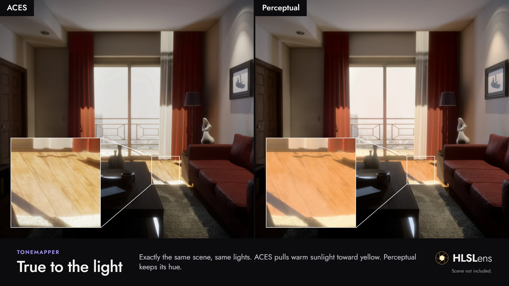
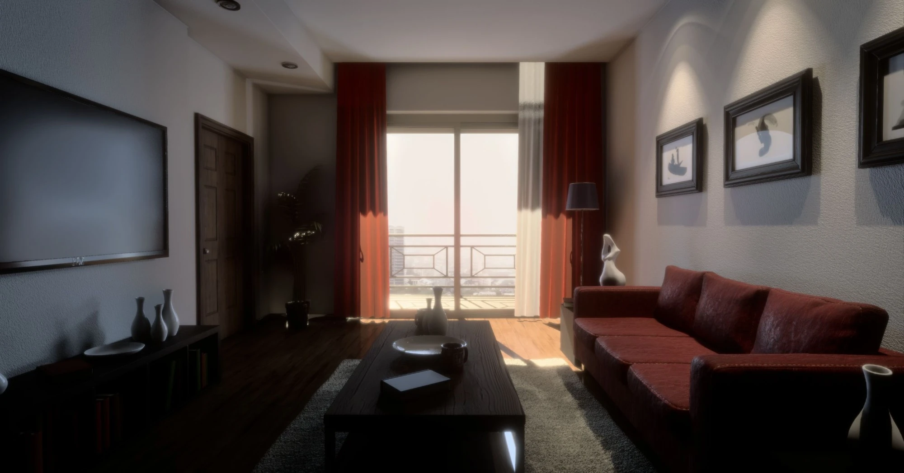
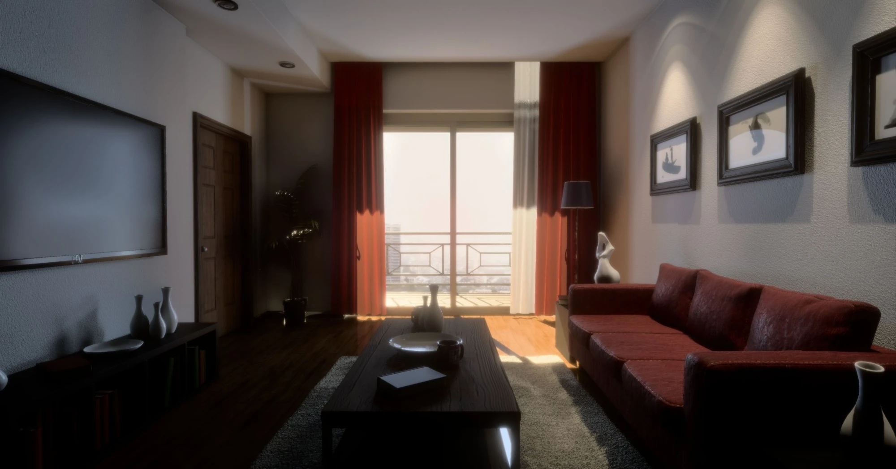
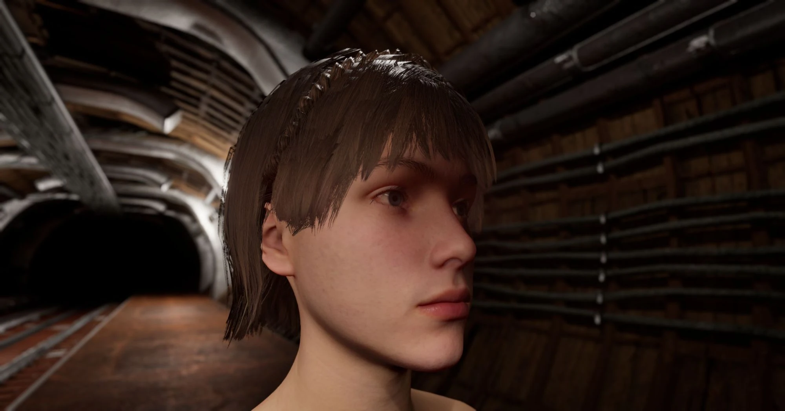
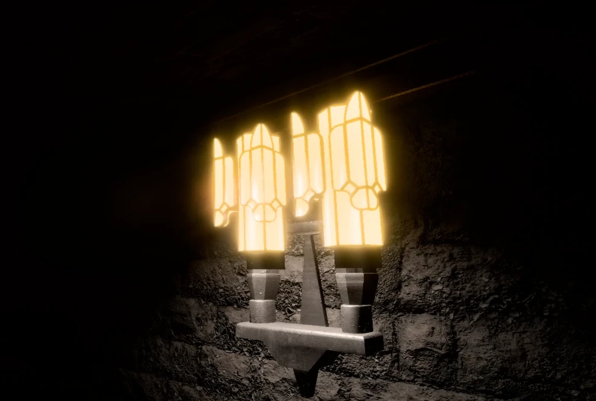
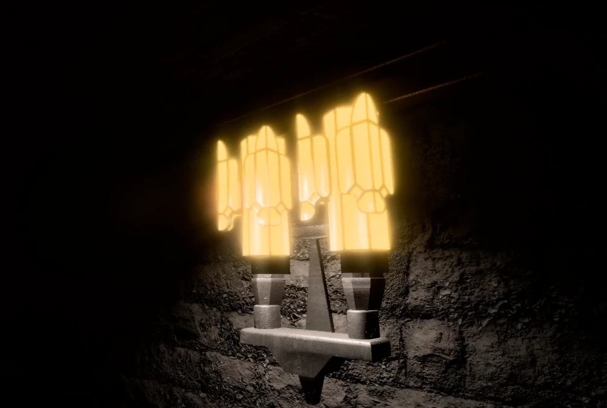
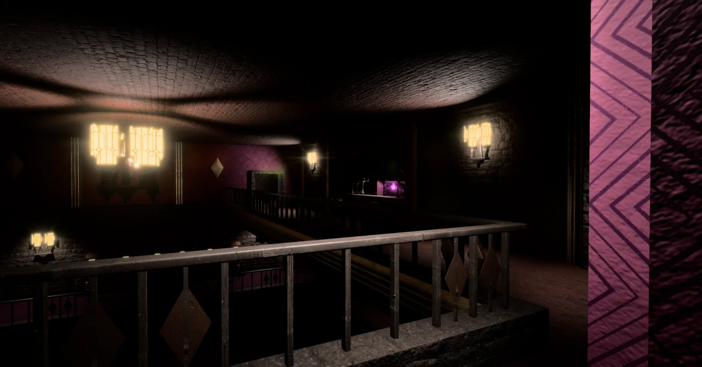

Color
Tonemapper
A tonemapper decides how the brightness of your scene ends up on a screen. Your lights can be thousands of times brighter than your shadows, but a screen can only show a small part of that range. The tonemapper squeezes it down, how it does that has a big effect on the colors you see.
HLSLens has two. ACES is the default and it's identical to the engine's own ACES tonemapper. Perceptual is my own tonemapper, built to keep colors closer to the ones you actually picked. With ACES, bright emissive lights tend to clip or drift in hue and that's the main thing Perceptual was made to fix. To switch, set Tonemapper Mode to Perceptual. You'll find it in the LUT category of the volume.
- Where to find it
- Tonemapper Mode in the LUT category. The Perceptual settings are in Color Correction → ChannelA → Perceptual Tonemapper.
- Perceptual cost
- Very low. The same as ACES every frame.
ACES and Perceptual
Neither one is better in every scene. ACES is a proven look that a lot of people know. Perceptual is more faithful to your colors and gives you more control.
| ACES | Perceptual | |
|---|---|---|
| Color | Squeezes the red, green and blue channels separately | Squeezes only the lightness and leaves the color alone |
| Bright colored lights | Can drift toward yellow or orange as they get brighter | Keep their color, then fade to white |
| Contrast and saturation | Linked together in one curve | Separate controls |
| Highlights | ACES decides | You decide how and when lights go white |
| Tone curve settings | Film Slope, Toe, Shoulder, Black Clip, White Clip | Mid Point, Contrast, Black Gradient, Toe End, Shoulder Softness, Shoulder Start |
Why do colors look different?
The first thing you'll notice after switching is that colors change. Emissive lights show it most, but they aren't the only ones.
ACES works on the red, green and blue channels one at a time. When a bright, saturated color is squeezed, each channel is squeezed by a different amount, so the color drifts. Red lights turn orange or yellowish, and the brighter they are, the stronger it gets.
The Perceptual tonemapper splits every color into three parts: 1) how bright it is, 2) how colorful it is and 3) which hue it is. It only squeezes the brightness. The hue is left alone, so a red light stays red at any brightness. If a light gets too bright, it fades to white instead of changing color.
Other colors look a little different too. The hue shift ACES adds is gone, also contrast and saturation now come from their own settings instead of one shared curve.




How the Perceptual tonemapper works
You don't really need to know all of this, but it makes the settings easier to understand.
01Grade The usual color grading runs first: white balance, saturation, contrast, gain and so on.
02Split The color is moved into OKLab, a color space made to match how people see color, and split into brightness, colorfulness and hue.
03Shape Each part gets its own curve. The brightness curve is the contrast.
04Finish Tints, the 12 color adjustments and the black and white points are applied. Colors that end up too strong are desaturated, not clipped.
Clipping is what turns bright saturated lights yellow, so the last step desaturates instead of clipping.
| Part | What it is | Controlled by |
|---|---|---|
| Lightness | How bright a color is | Mid Point, Contrast, Black Gradient, Toe End, Shoulder Softness, Shoulder Start |
| Chroma | How colorful it is | Saturation Curve, Max Chroma |
| Hue | Which color it is | Grade Hue Angle, Grade Chroma Offset and the 12 color adjustments |
Vignette, Bloom, Halation, Lens Flares and Film Grain are all added before the tonemapper, so they are tonemapped together with the rest of the image.
Perceptual settings
These are in Color Correction → ChannelA → Perceptual Tonemapper and only show up when Tonemapper Mode is Perceptual. The ACES-only groups, like Film, are hidden in that mode. Each setting also has a tooltip in the editor.
ChannelA is your main grade. ChannelB has the same settings and only appears when you use LUT blending.
Contrast curve
| Setting | What it does | Default | Range |
|---|---|---|---|
| Mid Point | The pivot of the curve. Moves the line between what counts as shadow and what counts as highlight. | 0.45 | 0.05 to 0.95 |
| Contrast | How steep the curve is through the mid point. Low is flatter, high is punchier. | 0.5 | 0.05 to 1.5 |
| Black Gradient | Lifts the darkest shadows off pure black. Low gives deep, crushed blacks, high faded blacks. | 0.05 | 0 to 0.5 |
| Toe End | How far the shadow part of the curve reaches before it blends into the midtones. | 0.35 | 0.05 to 0.8 |
| Shoulder Softness | Pulls the brightest highlights down from pure white. Low is bright, high is softer. | 0.05 | 0 to 0.5 |
| Shoulder Start | How far the highlight part of the curve reaches before it blends into the midtones. | 0.45 | 0.1 to 0.95 |
If a combination of these makes the curve fold over on itself, the image can look broken. r.HLSLens.Tonemapper.Debug 1 shows the curve and tells you which value to change, see Console variables.

Color
| Setting | What it does | Default | Range |
|---|---|---|---|
| Saturation Curve | How saturation changes across the tonal range. Low is more even and more muted. High gives a bigger difference between muted and vivid areas. | 0.8 | 0 to 2 |
| Max Chroma | The point where highlights start fading toward white. Lower starts earlier, which helps against oversaturated highlights. Too high and a bright red light can turn dark red instead of bright. | 0.6 | 0.3 to 1 |
| Grade Hue Angle | Direction of a white balance shift around the color wheel, in radians. | 0 | −3.14 to 3.14 |
| Grade Chroma Offset | How strong that shift is. 0 is no shift. |
0 | −0.05 to 0.05 |
Tints
The tints are in their own Perceptual Tonemapper Tints group. Each tint colors part of the image. Its Amount sets the strength, from 0 (no tint, the default) to 1 (fully tinted).
| Setting | What it does | Range |
|---|---|---|
| Main Tint and Amount | Tints the whole image. | Amount 0 to 1 |
| Shadows Tint and Amount | Tints the dark areas. | Amount 0 to 1 |
| Mids Tint and Amount | Tints the midtones. | Amount 0 to 1 |
| Highlights Tint and Amount | Tints the bright areas. | Amount 0 to 1 |
| Shadows Amount | How much of the image counts as shadows. Low is only the darkest areas. Default 0.65. | 0 to 3 |
| Highlights Amount | How much of the image counts as highlights. Low is only the brightest areas. Default 0.65. | 0 to 3 |
| Exposure Masks Contrast | How sharp the change between shadows, midtones and highlights is. Low is smooth and gradual, high is sharper. Default 0.65. | 0 to 0.9 |
Black and white points
| Setting | What it does | Range |
|---|---|---|
| Histogram In Low | The input black point. Raise it to turn more of the darkest tones black. | 0 to 0.4 |
| Histogram In High | The input white point. Lower it to turn more of the brightest tones white. | 0.6 to 1.2 |
| Histogram Out Low | The output black point. Raise it to lift the blacks and lower contrast. | 0 to 0.2 |
| Histogram Out High | The output white point. Lower it to dim the whites and lower contrast. | 0.8 to 1 |
Bright lights
Very bright lights are where the two tonemappers differ the most. In Perceptual mode lights keep their color and then fade to white as they get brighter, instead of turning yellow. These settings control when and how much. The first two are in the LUT category under Perceptual Tonemapper.
| Setting | What it does | Default | Range |
|---|---|---|---|
| Highlight Shoulder Start (EV) | How bright a pixel must be before its color starts fading toward white, in stops. 0 EV is a value of 1.0 and 4 EV a value of 16. |
0 | 0 to 8 |
| Highlight Desaturation-Blend Strength | The most a bright pixel can be blended toward white once it passes the shoulder. Higher turns bright lights whiter, lower keeps more color. | 0.5 | 0 to 1 |
| Max Chroma | See Color above. | 0.6 | 0.3 to 1 |
Raise Highlight Shoulder Start (EV) and only very bright lights lose their color, so lights stay vivid longer. Lower it and hot lights turn white sooner.


Selective color grading
You can change the brightness, hue and saturation of each color in the scene on its own, across 12 different color channels. For example if you want the orange tones to lean a little red and be a touch darker without changing the rest of the scene.
Every color has the same three settings, named after the color, for example Orange Hue-Shift.
| Setting | What it does | Range |
|---|---|---|
| Color Luma-Shift | Brightens or darkens that color. 1.0 is no change, lower darkens and higher brightens. |
0 to 2 |
| Color Hue-Shift | Rotates that color toward a neighboring hue. 0 is no shift. |
−2 to 2 |
| Color Chroma-Shift | Saturates or desaturates that color. 1.0 is no change, lower desaturates and higher saturates. |
0 to 2 |
The 12 colors are Pink, Red, Orange, Yellow, Lime, Green, Aqua, Cyan, Light Blue, Blue, Violet and Magenta.

HDR displays
The Perceptual curve is made for normal SDR screens. On HDR displays the final tone curve is ACES.
| Works on HDR | Does not work on HDR |
|---|---|
| Tints, Saturation Curve, the 12 color adjustments, the black and white points and the engine's color grading | The contrast curve, the highlight fade to white, the gamut fit and LUT textures |
Common questions
Is the ACES mode the same as the engine's?
Yes. It is identical to the engine's ACES tonemapper.
My scene looks different after switching. Is something broken?
No. Perceptual doesn't shift the hue of bright colors like ACES does, and contrast and saturation come from different settings. You'll probably need to adjust the color of a few lights. I'd also suggest looking at the Saturation Curve as the Perceptual tonemapper often likes to make the scene a bit more saturated or desaturated by default.
My bright red light looks dark red.
Max Chroma is probably too high. Lower it so highlights start fading toward white earlier.
My lights look too white or too dull.
Change Highlight Shoulder Start (EV). Lowering it keeps more color but can make lights look matte, and raising it makes them whiter. Highlight Desat Blend Strength and Max Chroma also change how fast lights go white.
Do my LUTs still work?
Yes, on normal screens. They are applied after the tonemapper. On HDR displays they are not applied.
The curve settings do nothing on my HDR monitor.
That is expected. See HDR displays above.
Does Perceptual cost more than ACES?
Not every frame. In testing the tonemapper pass cost the same with both. The heavier math is done in the color grading LUT pass, which only runs when a color setting changes or volumes blend. See Performance.
The result looks wrong.
Enable r.HLSLens.Tonemapper.Debug 1 to see the tone curve. If the curve is broken, the overlay tells you what to change. It works in the editor and development builds, not in shipping builds.